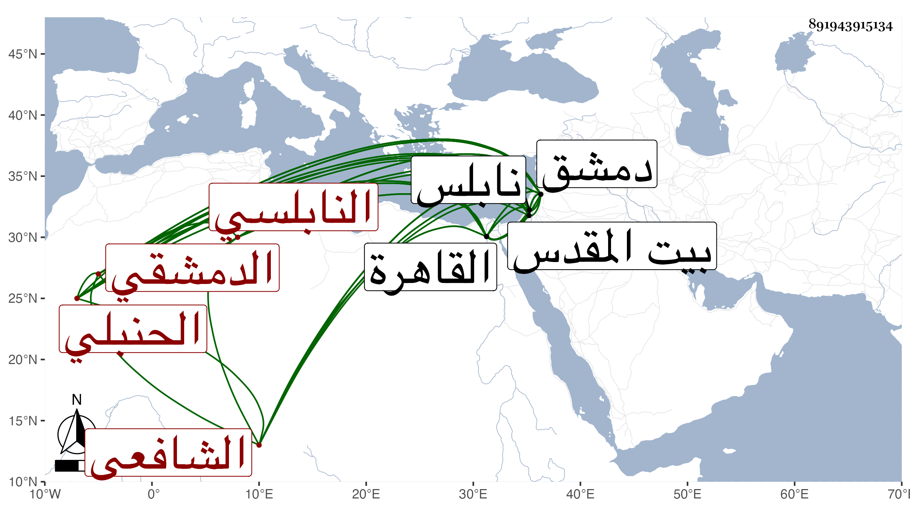

0902Sakhawi.DawLamic.ITO20230111-ara1.EIS1600.891943915134
Biography ID: 891943915134
أحمد بن إبراهيم بن محمد بن محمد بن محمد بن عمر الشهاب بن البرهان النابلسي ثم الدمشقي الحنبلي ثم الشافعي نزيل القاهرة والماضي أبوه والآتي ولده أبو بكر ، ولد في عاشر رجب سنة إحدى عشرة وثمانمائة بنابلس وقرأ بها القرآن ونشأ كأبيه حنبليا وحفظ كتبا في المذهب ثم اتصل بالبهاء بن حجي وصهره الكمال البارزي بدمشق واختص بهما فتحول بأمرهما شافعيا وتفقه بعبد الوهاب الحريري وسمع الحديث على ابن ناصر الدين وأبي شعر واشتغل بالنحو على العلاء القابوني بدمشق والنظام يحيى الصيرامي لما قدم عليهم نابلس وكثر تردده لكل من دمشق والقاهرة وقطنهما وقال أنه سمع ببيت المقدس على القبابي المسلسل وغيره وبالقاهرة على ابن بردس وعلى ابن الطحان وابن ناظر الصاحبة قال البقاعي ونظم الشعر غير أنه لم يكن يرتضي ما يقع له منه وهو حلو الكلام سريع الجواب حلو النادرة نزيه المحاضرة ثم أنشد عنه قوله وقد اقترح البهاء بن حجي عليه وعلى الجمال يوسف الباعوني أن يضمن قول الشاعر فوالله ما أدري البيت الآتي قال وكان ذلك أول شيء نظمه فقال :
| أراك إذا ما مست يوما على الربى | تخر لك الورقا ويبدو وجيبها |
| فوالله ما أدري أءنت كما أرى | أم العين مزهو إليها حبيبها |
وقال الجمال :
| أراك حبيب القلب تزهو لناظري | وإن مرضت نفسي فأنت طبيها |
فوالله ما أدري اليبت ، ومما حكاه الشهاب أنه كان بدمشق في بعض حماماتها بلان كسيح يخدم الناس بالحلق والغسيل وهو جالس وأنه رأى في منامه الشيخ رسلان فقال له يا سيدي انظر حالي أنا لست في هذا المقام ولكن سيدخل عليك اثنان فسلهما حاجتك ثم خرج من عنده فدخل عليه اثنان فاذاهما النبي صلى الله عليه وسلم وأبوه الخليل إبراهيم عليه الصلاة والسلام فشكا إليهما حاله فقالا له قم فقام وأصبح صحيحا ، قال الشهاب حاكيها وكنت ممن رأيته كسيحا ثم رأيته صحيحا وسمعت هذا المنام من جمع لا يحصى قلت ثم عرضت عليه هذه الحكاية فأنكر أن يكون رأى البلان أو يعرفه وإنما الحاكي لها عنه هو الذي رآه والذي فيها مع ذلك أن رسلان هو الذي أخذ بيده دون ما بعده فالله أعلم وكذا أسلفت عنه حكاية في ترجمة أبيه ، وقد امتحن وأهين من الأشرف قايتباي في كائنة جرت بينه وبين أبي الحجاجي الأسيوطي .
